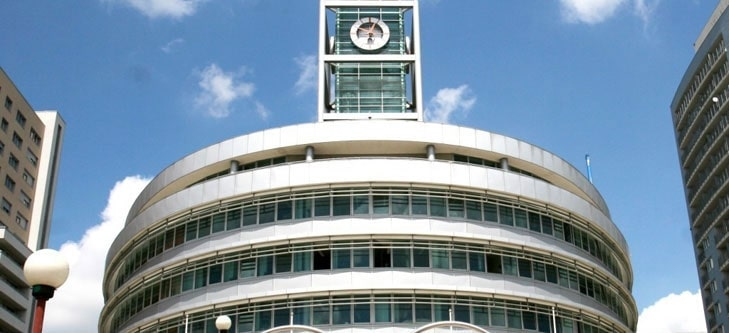

Úřad městské části
Adresa
Úřad městské části Praha 13
Sluneční náměstí 2580/13
158 00 Praha 5 - Stodůlky
Telefon a email
Ústředna: 235 011 111
Informace: 235 011 144, 235 011 228
Bezplatná linka (bez přepojení dál): 800 130 000
Email: dotazy@praha13.cz
Vedení úřadu
Ing. David Vodrážka
Starosta
vodrazkad@praha13.czKompetence vyplývající ze zákona, dále odpovídá za strategický rozvoj městské části, finance, legislativu a sociální oblast.
Petr Zeman
Místostarosta
zemanp@praha13.czOdpovídá za oblast majetku, investic, kulturní, tělovýchovné a spolkové činnosti.
David Zelený
Místostarosta
zelenyd@praha13.czOdpovídá za oblast bytové politiky, správcovských firem a dopravy.
RNDr. Marcela Plesníková
Místostarosta
plesnikovam@praha13.czOdpovídá za oblast školství a životního prostředí.

Ing. Jaroslav Mareš
Tajemník úřadu
maresk@praha13.czOdpovídá za organizaci úřadu z hlediska pracovněprávních vztahů, koordinuje výkon státní správy v přenesené působnosti. Ve věcech samostatné působnosti provádí činnost na základě rozhodnutí samosprávy.
Datová schránka
ID schránky: zv6bsur
Identifikační číslo: 00241687
nebo můžete vypsat celý název organizace: Městská část Praha 13.
Datová schránka přijímá všechny běžné formáty datové zprávy, např.pdf, txt, rtf, doc, xls.
Žádosti o informace
Informace pro veřejnost:
- Hana Bělková, Andrea Říčková - informace v přízemí radnice
- dotazy emailem či na telefony uvedené výše v sekci "Telefon a email"
Žádosti o informace ve smyslu zákona č. 106/1999 Sb.:
- E-mail elektronické podatelny:
- epodatelna@praha13.cz
Informace pro novináře:
Mgr. Lucie Steinerová (5. patro, č. 613)
tisková mluvčí
Tel.: 235 011 217
Email: steineroval@praha13.cz